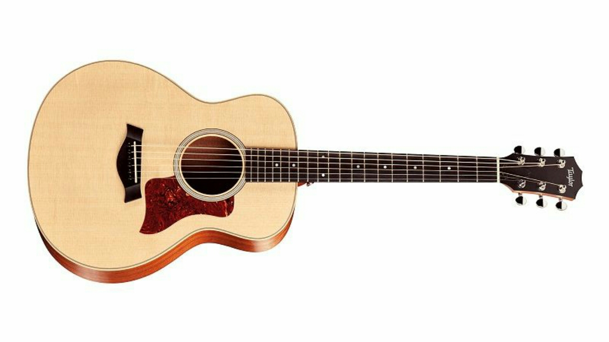
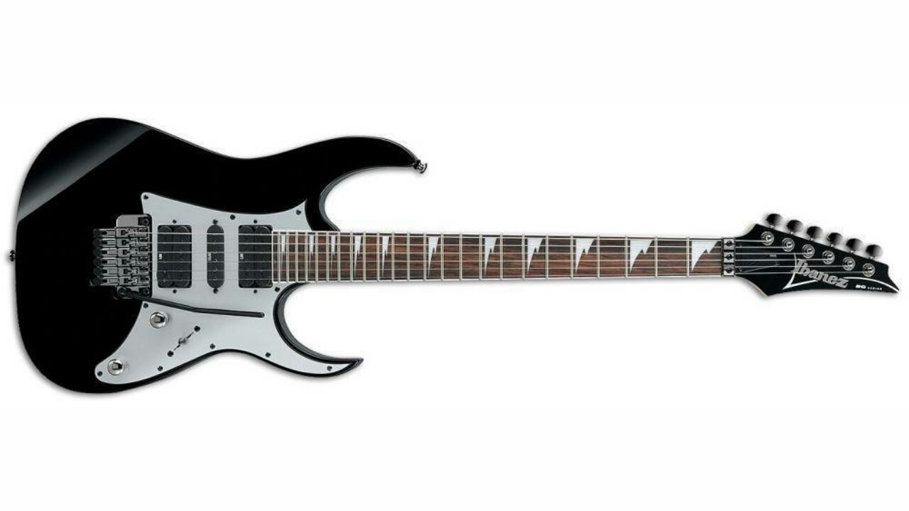
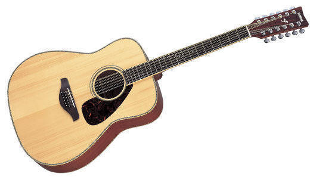
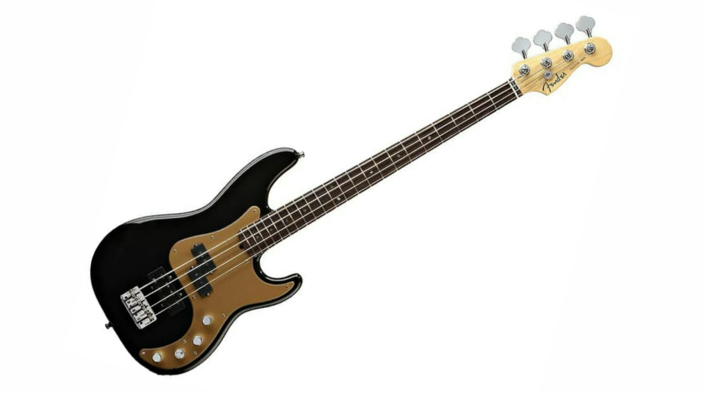
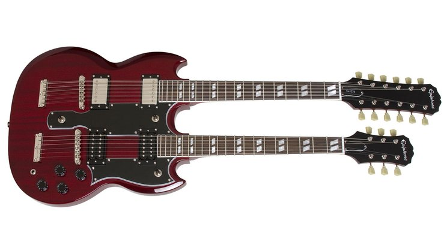

Jenis-jenis Gitar

1. Gitar Akustik
Berbicara tentang gitar akustik, ada dua jenis yaitu yang mempunyai steel-base string dan yang klasik. Perbedaan yang ketara di antara kedua jenis tersebut adalah badan dari gitar klasik yang cenderung lebih lebar dengan ukuran relatif sama, namun gitar akustik bisa dibuat dengan berbagai macam ukuran. Untuk suaranya sendiri, gitar akustik bisa digunakan untuk berbagai jenis genre musik seperti jazz, pop, rock, dll. Sedangkan gitar klasik terbatas hanya untuk jenis musik klasik. Pada cara pemakaian pun juga berbeda, apabila gitar klasik dapat dimainkan dengan jari-jari tangan, gitar akustik harus menggunakan plectrum karena senarnya yang terbuat dari baja.

2. Gitar Elektrik/Listrik
Gitar jenis ini biasanya dimainkan untuk musik rock, jazz, pop bahkan juga blues dengan menggunakan amplifier yang bertujuan untuk mendapatkan kekencangan suara seperti yang diinginkan. Gitar elektrik jika dibandingkan dengan gitar akustik pastinya mempunyai perbedaan, yaitu senar pada gitar elektrik yang cenderung lebih tipis dan bobotnya lebih berat dibanding gitar akustik. Suara yang dihasilkan pun juga lebih kasar dan kencang, tidak seperti gitar akustik yang menghasilkan suara lebih lembut.

3. Gitar 12 Senar
Jenis gitar ini pastinya berbeda dengan model enam senar yang biasanya anda jumpai di toko. Gitar ini mempunyai dua belas senar yang digabungkan menjadi satu sehingga tetap terlihat seperti gitar enam senar biasa. Hal ini menjadikan gitar dua belas senar mempunyai kemampuan untuk menciptakan suara yang lebih jernih dan jelas, namun untuk memainkannya, anda harus menekannya dengan kencang agar suara yang dikeluarkan tidak fals.

4. Gitar Bass
Gitar bass adalah salah satu tipe gitar yang sangat populer dengan senarnya yang memiliki ukuran lebih tebal untuk menghasilkan nada-nada rendah. Dibandingkan dengan gitar akustik, bentuk badan gitar bass lebih besar dengan bagian leher agak panjang. Ada dua tipe gitar bass yang biasanya dipakai, yaitu elektrik gitar bass dan akustik gitar bass.

5. Gitar Double Neck
Pada gitar jenis ini terdapat dua macam gitar yang dijadikan satu, yaitu gitar dengan enam string dan gitar dua belas string pada badan yang sama yang berfungsi sebagai resonator center. Gitar ini digunakan oleh musisi yang ingin berganti-ganti notes namun tidak memungkinkan hanya menggunakan satu gitar saja.